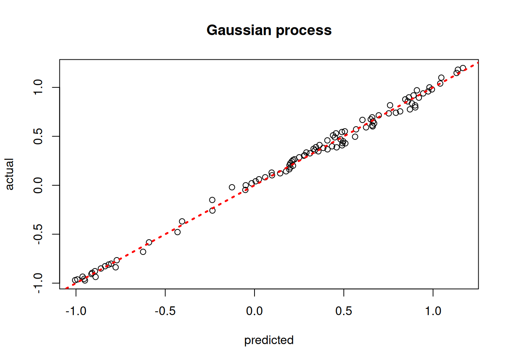
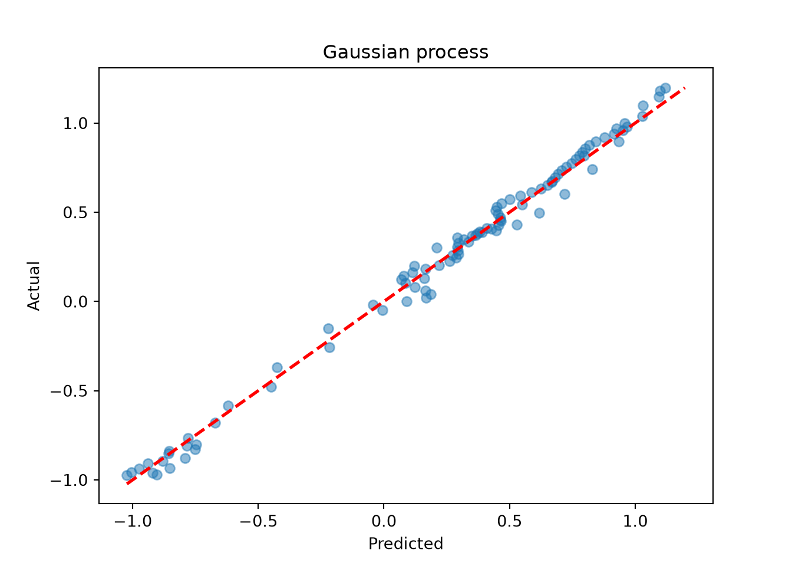
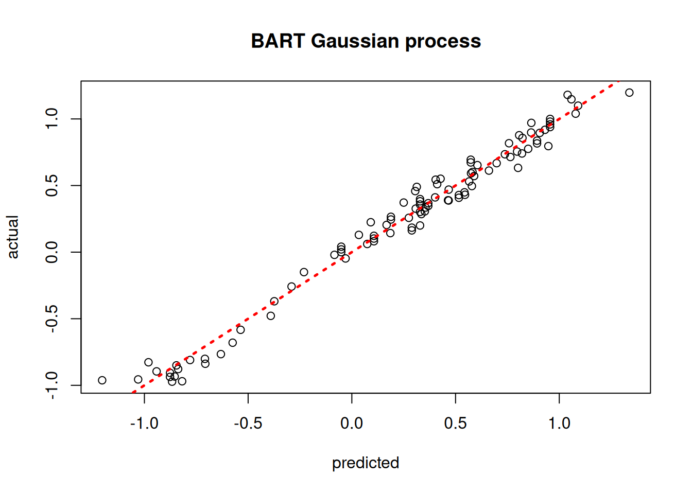
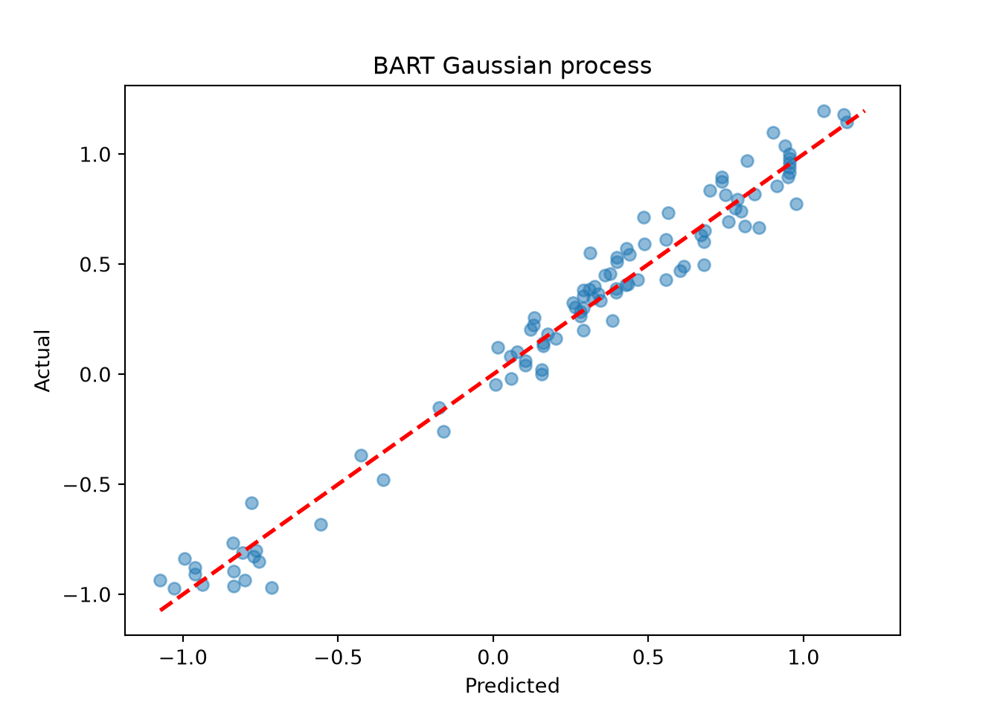
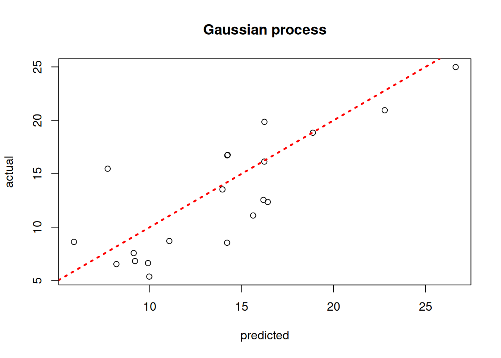
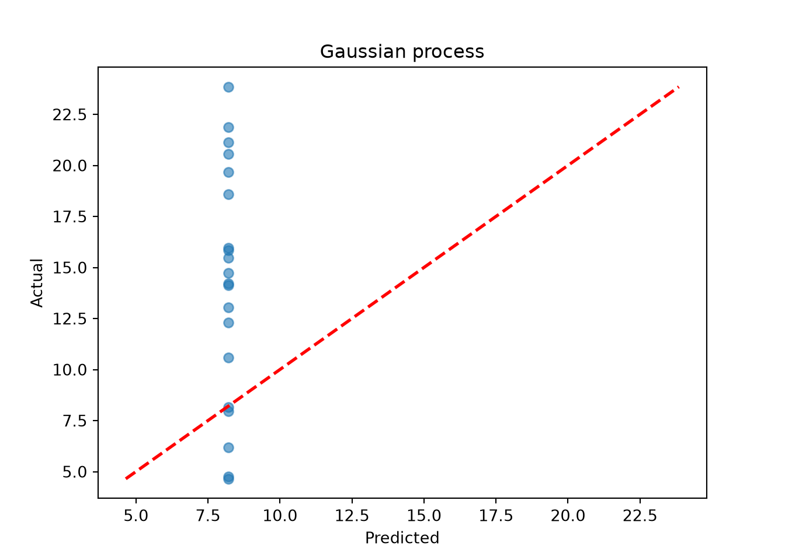
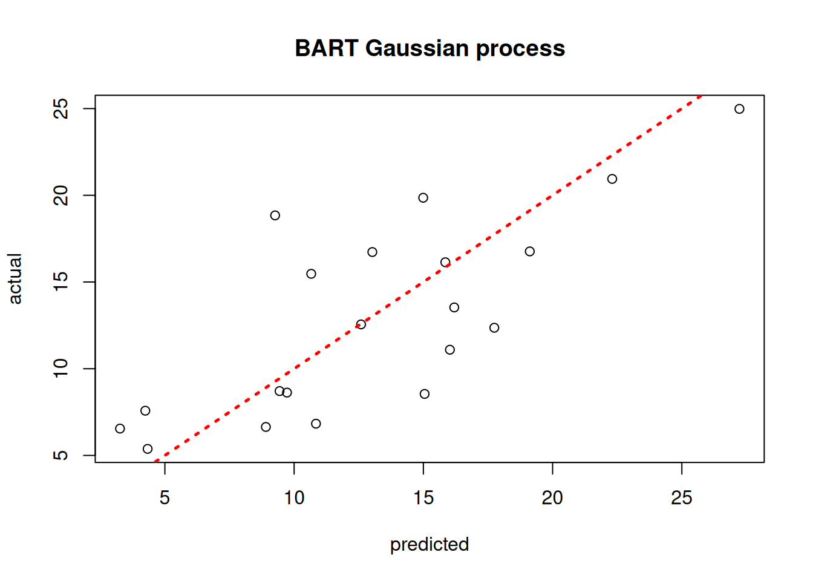
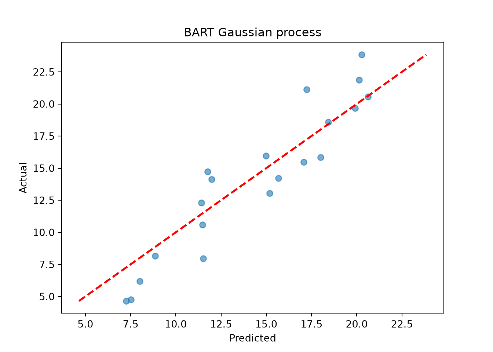

library(stochtree)
library(tgp)
library(MASS)
library(Matrix)
library(mvtnorm)Using Shared Leaf Membership as a Kernel
A trained tree ensemble with strong out-of-sample performance admits a natural motivation for the “distance” between two samples: shared leaf membership. This vignette demonstrates how to extract a kernel matrix from a fitted stochtree ensemble and use it for Gaussian process inference.
Motivation
We number the leaves in an ensemble from 1 to \(s\) (that is, if tree 1 has 3 leaves, it reserves the numbers 1 - 3, and in turn if tree 2 has 5 leaves, it reserves the numbers 4 - 8 to label its leaves, and so on). For a dataset with \(n\) observations, we construct the matrix \(W\) as follows:
Initialize \(W\) as a matrix of all zeroes with \(n\) rows and as many columns as leaves in the ensemble
Let s = 0
For \(j\) in \(\left\{1,\dots,m\right\}\):
Let num_leaves be the number of leaves in tree \(j\)
For \(i\) in \(\left\{1,\dots,n\right\}\):
Let k be the leaf to which tree \(j\) maps observation \(i\)
Set element \(W_{i,k+s} = 1\)
Let s = s + num_leaves
This sparse matrix \(W\) is a matrix representation of the basis predictions of an ensemble (i.e. integrating out the leaf parameters and just analyzing the leaf indices). For an ensemble with \(m\) trees, we can determine the proportion of trees that map each observation to the same leaf by computing \(W W^T / m\). This can form the basis for a kernel function used in a Gaussian process regression, as we demonstrate below.
Setup
Load necessary packages
import numpy as np
import matplotlib.pyplot as plt
from scipy.sparse import csr_matrix
from sklearn.gaussian_process import GaussianProcessRegressor
from sklearn.gaussian_process.kernels import RBF, WhiteKernel
from sklearn.datasets import make_friedman1
from stochtree import BARTModel, compute_forest_leaf_indicesSet a seed for reproducibility
random_seed <- 101
set.seed(random_seed)random_seed = 101
rng = np.random.default_rng(random_seed)Demo 1: Univariate Supervised Learning
We begin with a non-stationary simulated DGP with a single numeric covariate, originally described in Gramacy and Taddy (2010). We define a training set and test set and evaluate various approaches to modeling the out-of-sample outcome.
Traditional Gaussian Process
# Generate the data
X_train <- seq(0,20,length=100)
X_test <- seq(0,20,length=99)
y_train <- (sin(pi*X_train/5) + 0.2*cos(4*pi*X_train/5)) * (X_train <= 9.6)
lin_train <- X_train>9.6;
y_train[lin_train] <- -1 + X_train[lin_train]/10
y_train <- y_train + rnorm(length(y_train), sd=0.1)
y_test <- (sin(pi*X_test/5) + 0.2*cos(4*pi*X_test/5)) * (X_test <= 9.6)
lin_test <- X_test>9.6;
y_test[lin_test] <- -1 + X_test[lin_test]/10
# Fit the GP
model_gp <- bgp(X=X_train, Z=y_train, XX=X_test)
plot(model_gp$ZZ.mean, y_test, xlab = "predicted", ylab = "actual", main = "Gaussian process")
abline(0,1,lwd=2.5,lty=3,col="red")
# Generate the data
X_train_1d = np.linspace(0, 20, 100)
X_test_1d = np.linspace(0, 20, 99)
y_train_1 = (np.sin(np.pi * X_train_1d / 5) + 0.2 * np.cos(4 * np.pi * X_train_1d / 5)) * (X_train_1d <= 9.6)
y_train_1[X_train_1d > 9.6] = -1 + X_train_1d[X_train_1d > 9.6] / 10
y_train_1 = y_train_1 + rng.normal(0, 0.1, len(X_train_1d))
y_test_1 = (np.sin(np.pi * X_test_1d / 5) + 0.2 * np.cos(4 * np.pi * X_test_1d / 5)) * (X_test_1d <= 9.6)
y_test_1[X_test_1d > 9.6] = -1 + X_test_1d[X_test_1d > 9.6] / 10
# sklearn's GaussianProcessRegressor is used here in place of R's tgp::bgp
X_train_2d = X_train_1d.reshape(-1, 1)
X_test_2d = X_test_1d.reshape(-1, 1)
gp_kernel = RBF(length_scale=1.0) + WhiteKernel(noise_level=0.01)
model_gp_1 = GaussianProcessRegressor(kernel=gp_kernel, n_restarts_optimizer=5,
random_state=random_seed)
model_gp_1.fit(X_train_2d, y_train_1)GaussianProcessRegressor(kernel=RBF(length_scale=1) + WhiteKernel(noise_level=0.01),
n_restarts_optimizer=5, random_state=101)In a Jupyter environment, please rerun this cell to show the HTML representation or trust the notebook. On GitHub, the HTML representation is unable to render, please try loading this page with nbviewer.org.
Parameters
Fitted attributes
gp_pred_1 = model_gp_1.predict(X_test_2d)
plt.scatter(gp_pred_1, y_test_1, alpha=0.5)
lo, hi = min(gp_pred_1.min(), y_test_1.min()), max(gp_pred_1.max(), y_test_1.max())
plt.plot([lo, hi], [lo, hi], color="red", linestyle="dashed", linewidth=2)
plt.xlabel("Predicted")
plt.ylabel("Actual")
plt.title("Gaussian process")
plt.show()
Assess the RMSE
sqrt(mean((model_gp$ZZ.mean - y_test)^2))[1] 0.04299507print(f"RMSE: {np.sqrt(np.mean((gp_pred_1 - y_test_1)**2)):.4f}")RMSE: 0.0529BART-based Gaussian Process
# Run BART on the data
num_trees <- 200
sigma_leaf <- 1/num_trees
X_train <- as.data.frame(X_train)
X_test <- as.data.frame(X_test)
colnames(X_train) <- colnames(X_test) <- "x1"
general_params <- list(num_threads=1)
mean_forest_params <- list(num_trees=num_trees, sigma2_leaf_init=sigma_leaf)
bart_model <- bart(X_train=X_train, y_train=y_train, X_test=X_test,
general_params = general_params, mean_forest_params = mean_forest_params)
# Extract kernels needed for kriging
leaf_mat_train <- computeForestLeafIndices(bart_model, X_train, forest_type = "mean",
forest_inds = bart_model$model_params$num_samples - 1)
leaf_mat_test <- computeForestLeafIndices(bart_model, X_test, forest_type = "mean",
forest_inds = bart_model$model_params$num_samples - 1)
W_train <- sparseMatrix(i=rep(1:length(y_train),num_trees), j=leaf_mat_train + 1, x=1)
W_test <- sparseMatrix(i=rep(1:length(y_test),num_trees), j=leaf_mat_test + 1, x=1)
Sigma_11 <- tcrossprod(W_test) / num_trees
Sigma_12 <- tcrossprod(W_test, W_train) / num_trees
Sigma_22 <- tcrossprod(W_train) / num_trees
Sigma_22_inv <- ginv(as.matrix(Sigma_22))
Sigma_21 <- t(Sigma_12)
# Compute mean and covariance for the test set posterior
mu_tilde <- Sigma_12 %*% Sigma_22_inv %*% y_train
Sigma_tilde <- as.matrix((sigma_leaf)*(Sigma_11 - Sigma_12 %*% Sigma_22_inv %*% Sigma_21))
# Sample from f(X_test) | X_test, X_train, f(X_train)
gp_samples <- mvtnorm::rmvnorm(1000, mean = mu_tilde, sigma = Sigma_tilde)
# Compute posterior mean predictions for f(X_test)
yhat_mean_test <- colMeans(gp_samples)
plot(yhat_mean_test, y_test, xlab = "predicted", ylab = "actual", main = "BART Gaussian process")
abline(0,1,lwd=2.5,lty=3,col="red")
# Run BART on the data
num_trees = 200
sigma_leaf = 1 / num_trees
general_params = {"num_threads": 1}
mean_forest_params = {"num_trees": num_trees, "sigma2_leaf_init": sigma_leaf}
bart_model_1 = BARTModel()
bart_model_1.sample(X_train=X_train_2d, y_train=y_train_1, X_test=X_test_2d,
general_params=general_params, mean_forest_params=mean_forest_params)
# Extract leaf indices for the last retained forest sample
last_sample = bart_model_1.num_samples - 1
leaf_mat_train_1 = compute_forest_leaf_indices(bart_model_1, X_train_2d,
forest_type="mean", forest_inds=last_sample)
leaf_mat_test_1 = compute_forest_leaf_indices(bart_model_1, X_test_2d,
forest_type="mean", forest_inds=last_sample)
# Build sparse W matrices (rows = observations, cols = global leaf indices)
n_train_1, n_test_1 = len(y_train_1), len(y_test_1)
col_inds_train = leaf_mat_train_1.flatten()
col_inds_test = leaf_mat_test_1.flatten()
max_col = max(col_inds_train.max(), col_inds_test.max()) + 1
W_train_1 = csr_matrix(
(np.ones(len(col_inds_train)), (np.tile(np.arange(n_train_1), num_trees), col_inds_train)),
shape=(n_train_1, max_col),
)
W_test_1 = csr_matrix(
(np.ones(len(col_inds_test)), (np.tile(np.arange(n_test_1), num_trees), col_inds_test)),
shape=(n_test_1, max_col),
)
# Compute kernel matrices
W_tr = W_train_1.toarray()
W_te = W_test_1.toarray()
Sigma_22 = (W_tr @ W_tr.T) / num_trees
Sigma_11 = (W_te @ W_te.T) / num_trees
Sigma_12 = (W_te @ W_tr.T) / num_trees
Sigma_21 = Sigma_12.T
Sigma_22_inv = np.linalg.pinv(Sigma_22)
# Compute GP posterior mean and covariance
mu_tilde = Sigma_12 @ Sigma_22_inv @ y_train_1
Sigma_tilde = sigma_leaf * (Sigma_11 - Sigma_12 @ Sigma_22_inv @ Sigma_21)
Sigma_tilde += 1e-8 * np.eye(n_test_1) # small jitter for numerical stability
# Sample from f(X_test) | X_test, X_train, f(X_train)
gp_samples_1 = rng.multivariate_normal(mu_tilde, Sigma_tilde, size=1000, method="eigh")<string>:3: RuntimeWarning: covariance is not symmetric positive-semidefinite.# Posterior mean predictions
yhat_mean_test_1 = gp_samples_1.mean(axis=0)
lo = min(yhat_mean_test_1.min(), y_test_1.min())
hi = max(yhat_mean_test_1.max(), y_test_1.max())
plt.scatter(yhat_mean_test_1, y_test_1, alpha=0.5)
plt.plot([lo, hi], [lo, hi], color="red", linestyle="dashed", linewidth=2)
plt.xlabel("Predicted")
plt.ylabel("Actual")
plt.title("BART Gaussian process")
plt.show()
Assess the RMSE
sqrt(mean((yhat_mean_test - y_test)^2))[1] 0.08325331print(f"RMSE: {np.sqrt(np.mean((yhat_mean_test_1 - y_test_1)**2)):.4f}")RMSE: 0.1016Demo 2: Multivariate Supervised Learning
We proceed to the simulated “Friedman” dataset (Friedman (1991)). In R, this is accessed via tgp::friedman.1.data; in Python we use sklearn.datasets.make_friedman1, which implements the same DGP.
Traditional Gaussian Process
# Generate the data, add many "noise variables"
n <- 100
friedman.df <- friedman.1.data(n=n)
train_inds <- sort(sample(1:n, floor(0.8*n), replace = FALSE))
test_inds <- (1:n)[!((1:n) %in% train_inds)]
X <- as.matrix(friedman.df)[,1:10]
X <- cbind(X, matrix(runif(n*10), ncol = 10))
y <- as.matrix(friedman.df)[,12] + rnorm(n,0,1)*(sd(as.matrix(friedman.df)[,11])/2)
X_train <- X[train_inds,]
X_test <- X[test_inds,]
y_train <- y[train_inds]
y_test <- y[test_inds]
# Fit the GP
model_gp <- bgp(X=X_train, Z=y_train, XX=X_test)
plot(model_gp$ZZ.mean, y_test, xlab = "predicted", ylab = "actual", main = "Gaussian process")
abline(0,1,lwd=2.5,lty=3,col="red")
# Generate the data: 10 Friedman features + 10 noise features
n = 100
X_raw, y_friedman = make_friedman1(n_samples=n, n_features=10, noise=1.0,
random_state=random_seed)
X_2 = np.hstack([X_raw, rng.uniform(size=(n, 10))]) # 20 features total
y_2 = y_friedman
train_inds_2 = rng.choice(n, int(0.8 * n), replace=False)
test_inds_2 = np.setdiff1d(np.arange(n), train_inds_2)
X_train_2, X_test_2 = X_2[train_inds_2], X_2[test_inds_2]
y_train_2, y_test_2 = y_2[train_inds_2], y_2[test_inds_2]
# sklearn's GaussianProcessRegressor is used here in place of R's tgp::bgp
gp_kernel_2 = RBF(length_scale=1.0) + WhiteKernel(noise_level=1.0)
model_gp_2 = GaussianProcessRegressor(kernel=gp_kernel_2, n_restarts_optimizer=1,
random_state=random_seed)
model_gp_2.fit(X_train_2, y_train_2)GaussianProcessRegressor(kernel=RBF(length_scale=1) + WhiteKernel(noise_level=1),
n_restarts_optimizer=1, random_state=101)In a Jupyter environment, please rerun this cell to show the HTML representation or trust the notebook. On GitHub, the HTML representation is unable to render, please try loading this page with nbviewer.org.
Parameters
Fitted attributes
gp_pred_2 = model_gp_2.predict(X_test_2)
lo = min(gp_pred_2.min(), y_test_2.min())
hi = max(gp_pred_2.max(), y_test_2.max())
plt.scatter(gp_pred_2, y_test_2, alpha=0.6)
plt.plot([lo, hi], [lo, hi], color="red", linestyle="dashed", linewidth=2)
plt.xlabel("Predicted")
plt.ylabel("Actual")
plt.title("Gaussian process")
plt.show()
Assess the RMSE
sqrt(mean((model_gp$ZZ.mean - y_test)^2))[1] 3.39143print(f"RMSE: {np.sqrt(np.mean((gp_pred_2 - y_test_2)**2)):.4f}")RMSE: 8.2192BART-based Gaussian Process
# Run BART on the data
num_trees <- 200
sigma_leaf <- 1/num_trees
X_train <- as.data.frame(X_train)
X_test <- as.data.frame(X_test)
general_params <- list(num_threads=1)
mean_forest_params <- list(num_trees=num_trees, sigma2_leaf_init=sigma_leaf)
bart_model <- bart(X_train=X_train, y_train=y_train, X_test=X_test,
general_params = general_params, mean_forest_params = mean_forest_params)
# Extract kernels needed for kriging
leaf_mat_train <- computeForestLeafIndices(bart_model, X_train, forest_type = "mean",
forest_inds = bart_model$model_params$num_samples - 1)
leaf_mat_test <- computeForestLeafIndices(bart_model, X_test, forest_type = "mean",
forest_inds = bart_model$model_params$num_samples - 1)
W_train <- sparseMatrix(i=rep(1:length(y_train),num_trees), j=leaf_mat_train + 1, x=1)
W_test <- sparseMatrix(i=rep(1:length(y_test),num_trees), j=leaf_mat_test + 1, x=1)
Sigma_11 <- tcrossprod(W_test) / num_trees
Sigma_12 <- tcrossprod(W_test, W_train) / num_trees
Sigma_22 <- tcrossprod(W_train) / num_trees
Sigma_22_inv <- ginv(as.matrix(Sigma_22))
Sigma_21 <- t(Sigma_12)
# Compute mean and covariance for the test set posterior
mu_tilde <- Sigma_12 %*% Sigma_22_inv %*% y_train
Sigma_tilde <- as.matrix((sigma_leaf)*(Sigma_11 - Sigma_12 %*% Sigma_22_inv %*% Sigma_21))
# Sample from f(X_test) | X_test, X_train, f(X_train)
gp_samples <- mvtnorm::rmvnorm(1000, mean = mu_tilde, sigma = Sigma_tilde)
# Compute posterior mean predictions for f(X_test)
yhat_mean_test <- colMeans(gp_samples)
plot(yhat_mean_test, y_test, xlab = "predicted", ylab = "actual", main = "BART Gaussian process")
abline(0,1,lwd=2.5,lty=3,col="red")
num_trees = 200
sigma_leaf = 1 / num_trees
general_params = {"num_threads": 1}
mean_forest_params = {"num_trees": num_trees, "sigma2_leaf_init": sigma_leaf}
bart_model_2 = BARTModel()
bart_model_2.sample(X_train=X_train_2, y_train=y_train_2, X_test=X_test_2,
general_params=general_params, mean_forest_params=mean_forest_params)
last_sample_2 = bart_model_2.num_samples - 1
leaf_mat_train_2 = compute_forest_leaf_indices(bart_model_2, X_train_2,
forest_type="mean", forest_inds=last_sample_2)
leaf_mat_test_2 = compute_forest_leaf_indices(bart_model_2, X_test_2,
forest_type="mean", forest_inds=last_sample_2)
n_train_2, n_test_2 = len(y_train_2), len(y_test_2)
col_inds_train_2 = leaf_mat_train_2.flatten()
col_inds_test_2 = leaf_mat_test_2.flatten()
max_col_2 = max(col_inds_train_2.max(), col_inds_test_2.max()) + 1
W_train_2 = csr_matrix(
(np.ones(len(col_inds_train_2)),
(np.tile(np.arange(n_train_2), num_trees), col_inds_train_2)),
shape=(n_train_2, max_col_2),
)
W_test_2 = csr_matrix(
(np.ones(len(col_inds_test_2)),
(np.tile(np.arange(n_test_2), num_trees), col_inds_test_2)),
shape=(n_test_2, max_col_2),
)
W_tr2 = W_train_2.toarray()
W_te2 = W_test_2.toarray()
Sigma_22_2 = (W_tr2 @ W_tr2.T) / num_trees
Sigma_11_2 = (W_te2 @ W_te2.T) / num_trees
Sigma_12_2 = (W_te2 @ W_tr2.T) / num_trees
Sigma_21_2 = Sigma_12_2.T
Sigma_22_inv_2 = np.linalg.pinv(Sigma_22_2)
mu_tilde_2 = Sigma_12_2 @ Sigma_22_inv_2 @ y_train_2
Sigma_tilde_2 = sigma_leaf * (Sigma_11_2 - Sigma_12_2 @ Sigma_22_inv_2 @ Sigma_21_2)
Sigma_tilde_2 += 1e-8 * np.eye(n_test_2)
gp_samples_2 = rng.multivariate_normal(mu_tilde_2, Sigma_tilde_2, size=1000, method="eigh")
yhat_mean_test_2 = gp_samples_2.mean(axis=0)
lo = min(yhat_mean_test_2.min(), y_test_2.min())
hi = max(yhat_mean_test_2.max(), y_test_2.max())
plt.scatter(yhat_mean_test_2, y_test_2, alpha=0.6)
plt.plot([lo, hi], [lo, hi], color="red", linestyle="dashed", linewidth=2)
plt.xlabel("Predicted")
plt.ylabel("Actual")
plt.title("BART Gaussian process")
plt.show()
Assess the RMSE
sqrt(mean((yhat_mean_test - y_test)^2))[1] 3.958319print(f"RMSE: {np.sqrt(np.mean((yhat_mean_test_2 - y_test_2)**2)):.4f}")RMSE: 2.1434While the use case of a BART kernel for classical kriging is perhaps unclear without more empirical investigation, the kernel approach can be very beneficial for causal inference applications.
References
Friedman, Jerome H. 1991. “Multivariate Adaptive Regression Splines.” The Annals of Statistics 19 (1): 1–67.
Gramacy, Robert B., and Matthew Taddy. 2010. “Categorical Inputs, Sensitivity Analysis, Optimization and Importance Tempering with tgp Version 2, an R Package for Treed Gaussian Process Models.” Journal of Statistical Software 33 (6): 1–48. https://doi.org/10.18637/jss.v033.i06.